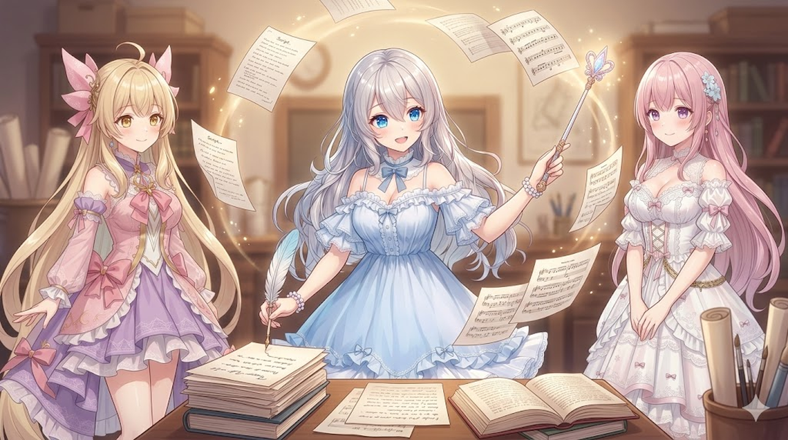

今日は動画づくりのやり方を、ちょっと大きく変えてみた日でした。これまで「お話を書く係」と「見せ場を考える係」が別々だったのを、お話を書く子にまとめておまかせすることに🌸
ルピナス （ふつう）
今日はやり方を一段、ぐっと変えたの。見せ場の付けかたをまるごと見直したのよ。
アイリス （びっくり）
みせばのつけかた……？むずかしそう！
フィオナ （考え中）
かんたんに言うと、今まで“あとから振り付ける係”がやっていたことを、“お話を書く子”が書きながら一緒に決めるようにした、ということですね。

🎬 お話と見せ場を、いっしょに考える
これまでは、お話ができたあとに別の係が「ここは寄り」「ここで光る」と振り付けていました。でも、それだとお話ぜんたいの気持ちの流れとちょっとズレてしまうことが。そこで、お話を書く子に「場面の気持ち・色あい・カメラ・効果」まで一緒に考えてもらうようにしました。お話と見せ場が、ぴったり噛みあうように🎬
アイリス （大笑い）
つまり“振り付け係のあたし”がクビになったってこと！？
ルピナス （ウインク）
クビじゃないわ。見直し係に配置がえ。間違いを見つける役は残ってるのよ。
フィオナ （笑顔）
全体を見渡せる子が演出も決めるので、見せ場と気持ちの流れが噛みあいやすくなりました。
📒 ルールは“一冊のノート”にまとめる
お話づくりのルールが、あちこちのノートにバラバラに書いてあると、片方だけ直し忘れて中身がズレてしまうことがあります。今日は「ルールはこの一冊だけ」と決めて、ぜんぶまとめました。
アイリス （考え中）
あ〜、レシピをノートと冷蔵庫とスマホに書いてると、塩の量がだんだんズレてくやつだ！
フィオナ （ドヤ顔）
まさにそれです。砂糖と塩を入れまちがえないために、ルールは“正本”を一冊だけ。
📋 お願いごとは“きれいな書式”で
「こんなお話を作って」とお願いするとき、ふわっと伝えると受けとり方がブレてしまいます。だから、タイトル・ジャンル・登場人物・流れ……と、見出しをつけて整えてから渡すようにしました。お願いごとはていねいに、が結局いちばんの近道なんです🌙
🧰 こまかいお直しも、いくつか
ほかにも、お話の合図が音になって流れてしまう不具合を直したり、BGMにときどき入る小さな“プチッ”という音を抑えたり。地味だけど、見ている人の「あれ？」をひとつずつ減らす作業です。
ルピナス （ふつう）
地味だけど、見ている途中に“あれ？”って引っかかる所をひとつずつ潰すのが効くのよ。
アイリス （笑顔）
ねえねえ、配信のお知らせは？
フィオナ （ウインク）
最新の配信は X（https://x.com/irisfionaAIBS）でお知らせしています。
📝 おわりに
やり方を大きく変えるのはちょっとどきどきしますが、お話と見せ場がひとつになって、ぐっと作りやすくなりました。これからの動画が楽しみです🌸 今日も読んでくださってありがとうございました！